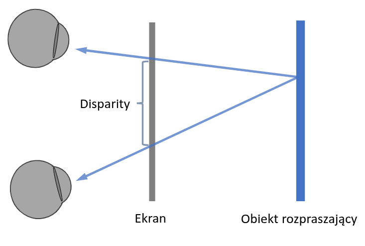

Stereoskopia
- Podobne problemy pojawiają się w VR
- Umożliwia odwzorowanie trzeciego wymiaru za pomocą dwuwymiarowych obrazów
- Dwa obrazy
- jeden na oko
- różne kąty widzenia obiektów
- różne przesłanianie się obiektów
Sposoby odwzorowania stereo
- Anaglify
- Filtry polaryzacyjne
- Metoda migawkowa
Disparity

Odległość między dwoma pasującymi do siebie punktami obiektu na obrazie (ekranie)
Anaglif
- Red-cyan
- Słabe odwzorowanie kolorów
- dobra zieleń
- prawie niewidoczny czerwony
- Ghosting
- lewe oko widzi część obrazu prawego
- Lepsze odmiany
- magenta + cyan
- trioscopic (zielony + magenta)
- ColorCode 3-D (bursztynowy + ciemny niebieski) - pełna percepcja ale wymaga jasnego obrazu i ciemnego pomieszczenia
- To można wydrukować na papierze i działa tak samo, nie potrzeba ekranu
Okulary pasywne
- Obrazy są widoczne dla każdego oka
- Soczewki polaryzacyjne
- soczewka przepuszcza do oka tylko obraz dla danego oka
- Nie ma konieczności zasilania okularów
- Wymaga odpowiedniego zakodowania obrazu
- np. linie na przemian - połowa rozdzielczości
Okulary aktywne
- Wyposażone w przesłony LCD
- Wymagają zasilania baterii
- Zsynchronizowane z ekranem
- w momencie wyświetlania obrazu dla lewego oka, prawe jest zasłonięte
- Dla każdego oka pełna rozdzielczość i prawie pełny kolor
Porównanie
- Okulary aktywne
- ciemniejszy obraz
- mniej widoczny cross-talk
- Okulary pasywne
- może zmieniać barwę obrazu
- brak migotania
Odbicia
- Jest zależne od kierunku patrzenia
- Obraz dla lewego i prawego oka może wyglądać znacząco inaczej
- Disparity odbite i disparity rozproszone
Załamanie
- Disparity przezroczystości, disparity załamania
Rywalizacja między oczami
- Dąży się do minimalizacji różnic w odbiciach między jednym i drugim obrazem
- Można renderować odbicia z innego miejsca
- przesunięcie wektora od oka obserwatora do renderowania odbić
- przesunięcie w stronę drugiego oka
Problem konwergencji i akomodacji
- Przesunięcie oka i zmiana widzenia głębokości
- Dla wyrenderowanego obrazu powinno być postrzeganie jak przy patrzeniu na ekran
- Jest określona strefa komfortu - trzeba spłaszczyć głębię do określonego zakresu